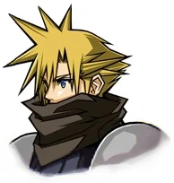
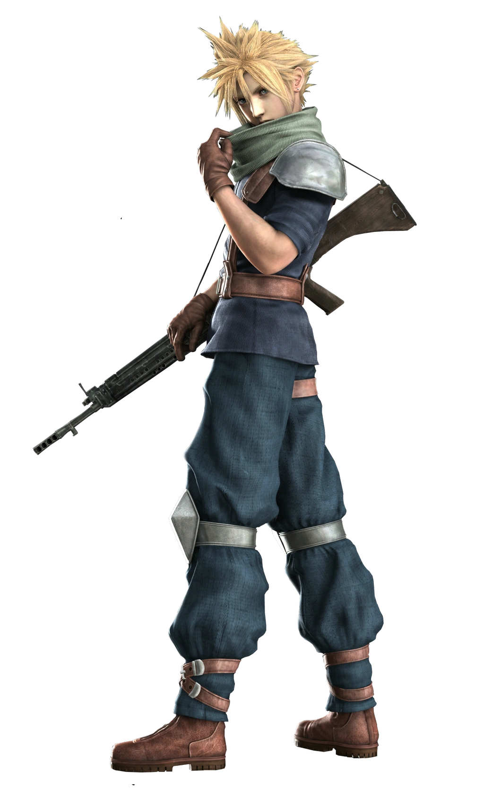
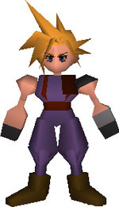
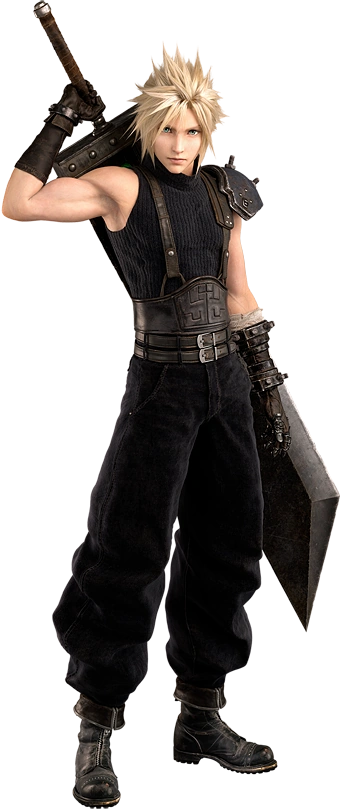
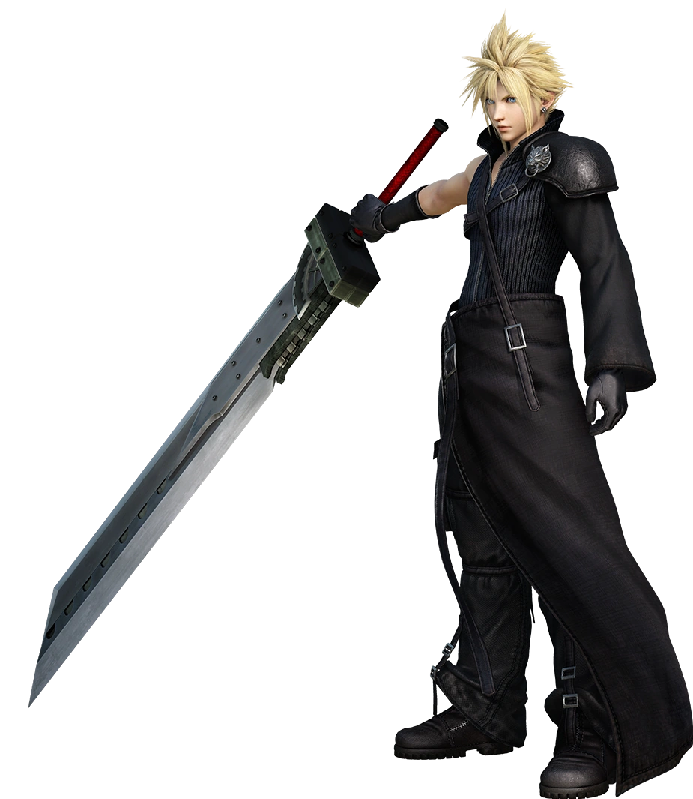
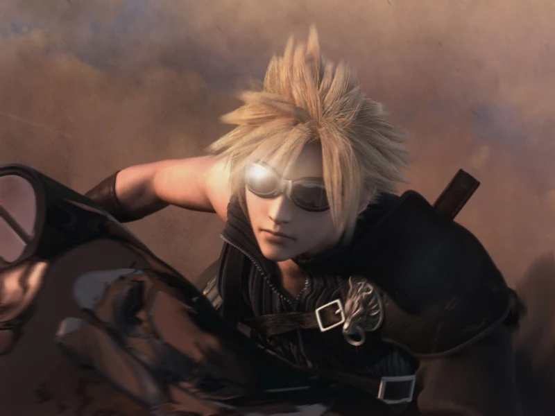

Tribute Page for Cloud Strife from Final Fantasy 7 Anthology Collection
Before Crisis
Crisis Core
Original FF7
FF7 Remake/Rebirth
Advent Children
Dirge of Cerberus(cameo)
Character Timeline of Cloud
Before Final Fantasy VII
Early life
Cloud was born August 11, 1986 in the mountain village of Nibelheim to Claudia Strife; his father died when Cloud was very young. Cloud lived next door to a girl a year younger than him, Tifa Lockhart, and was excluded from her friendship group. Bitter as a result, Cloud developed a superiority complex, believing her friends were stupid, and that he was more mature and different from them. He did not harbor any dislike for Tifa, but suspected she disliked him.
Tifa's mother died when Cloud was nine.[4] Not wanting to accept it, Tifa insisted she could meet her by crossing Mt. Nibel, taking her friends along. Unbeknownst to them, Cloud followed her, and when she took a misstep, he tried to catch her but they both fell. Though he was unharmed, Tifa was severely injured and in a coma for seven days. Her father, Brian Lockhart, blamed Cloud and forbade him from approaching her. He too blamed himself for failing to save her, harboring guilt in the form of increasing anger at himself, leading him to start fights for little to no reason.
Cloud resolved to better himself, and upon learning of Sephiroth and his exploits, set out to join SOLDIER and become a hero, hoping Tifa would notice him. In December 0000, he called Tifa out to the water tower to tell her about his departure, hoping to impress her. Tifa encouraged Cloud that he could make the newspapers and asked him to promise to save her should she ever find herself in trouble. The following spring of 0001, Cloud left for Midgar to join the Shinra Electric Power Company.
Despite his bravado, Cloud failed to make it into SOLDIER, enlisting as a mere Shinra infantryman instead. Out of embarrassment and shame, he lost contact with everyone from Nibelheim.[10] As told in Before Crisis -Final Fantasy VII-, on June 28, 0001, Cloud was among those ordered to protect Professor Rayleigh in Midgar from the insurgency organization Avalanche. Though he is unsuccessful, their lives were saved by the Player Turk. During the incident Cloud displayed impressive sword skills for a regular infantryman.
Cloud befriends Zack.
In autumn of that year, during chapter 5 of Crisis Core -Final Fantasy VII-, Cloud met Zack Fair, a SOLDIER First Class, on their way to Modeoheim. The two bonded upon learning they were both "country boys". When he and Zack infiltrated the Mako Excavation Facility, they encountered Genesis Rhapsodos and Dr. Hollander, former Shinra employees who since turned against the company. When Hollander attempted to escape, Cloud briefly captured him, though Hollander broke free. Cloud gave pursuit, but both he and Tseng—the leader of the Turks—were taken down by the rogue SOLDIER First Class, Angeal Hewley.
In September 0002, depicted in chapter 6 of Crisis Core, a sixteen-year-old Cloud met Zack again while protecting the city of Junon from Genesis's attack. On September 22 of that year (depicted in "The Tragedy of Five Years Ago" in Final Fantasy VII, chapter 8 of Crisis Core, and other media), Cloud returned to Nibelheim along with Zack and Sephiroth to investigate a damaged mako reactor on Mt. Nibel, and with Tifa as their guide through the mountains. Cloud hid his identity from the townspeople, ashamed of his failure to join SOLDIER, though he did visit his mother who asked about his new life with Shinra, after asking Zack to accompany him.
Cloud defeats Sephiroth in Crisis Core.
When the expedition reached the reactor, Sephiroth discovered Professor Hojo's experiments with humans mutated into monsters dubbed makonoids, and Jenova, whom Sephiroth mistakenly believed to be his mother. Genesis knocked Cloud out and Tifa helped him back into town, though still did not discover his identity. When Cloud regained consciousness, he was depressed over his lack of strength. Sephiroth locked himself in the Shinra Manor's basement for several sleepless days, immersing in Professor Gast Faremis's writings, and discovered his dark past, as well the secrets regarding the Cetra and the promised land. On October 1, Sephiroth destroyed the village on a rampage (the Nibelheim Incident), fueled by his newfound hatred for humanity.
Cloud witnessed his mother's death in the ensuing fire, and rushed back to the reactor to confront Sephiroth, finding both a gravely wounded Tifa and a barely conscious Zack. Cloud picked up Zack's Buster Sword, caught Sephiroth offguard in the reactor core, and impaled him, also giving a speech demanding Sephiroth return Tifa, his mother, and Nibelheim while lamenting he used to respect him, before attending to Tifa. When a wounded Sephiroth emerged from the reactor core, Cloud attacked him, intent on avenging the deaths of his mother and all the townspeople Sephiroth had killed. Though impaled on Sephiroth's Masamune, Cloud summoned the strength to overpower him with sheer willpower. Using the katana as a lever, Cloud lifted Sephiroth up and hurled him into the mako pit below before collapsing.
Experiments and fleeing Shinra
Cloud and Zack, as well as other survivors in the town (with the exception of Tifa who was rescued by Zangan before Shinra arrived), became Professor Hojo's test subjects. Injecting them with Jenova's cells and exposing them to mako, Hojo attempted to test his Jenova Reunion Theory on them, turning them into Sephiroth-clones, people whose wills can be over-ridden by Sephiroth's. Since Zack had gone through a similar process in SOLDIER, his body resisted the experiments, while Cloud succumbed and developed a severe case of mako poisoning. Hojo labeled the two failures, placed them in a cryogenic sleeping state, and left them in their pods in the Shinra Manor basement.
Cloud after his and Zack's final conversation.
Four years later, in December 19, 0006 (depicted in an optional flashback in Final Fantasy VII and chapter 9 of Crisis Core), Zack broke out of his confinement and helped a vegetative Cloud escape, giving him a SOLDIER uniform to wear as his old clothes were soaked with mako. Due to the experiments, Cloud was mentally broken, weak and delirious, but during their journey following the escape from Nibelheim, Zack told the unresponsive Cloud about his life and his plans for both of them to become mercenaries in Midgar. Though Cloud was unable to participate in the events, he was present when Zack defeated Genesis (depicted in chapter 10 of Crisis Core).
After almost a year of running, the pair arrived outside Midgar in September 0007. The Shinra forces caught up and Zack fought to defend both Cloud and himself against overwhelming numbers. Zack was gunned down, but the Shinra forces ignored the catatonic Cloud. Cloud regained some awareness and crawled over to Zack, who entrusted the Buster Sword to him, telling his legacy will live on inside Cloud, before dying. Buster Sword in hand, Cloud trudged off towards Midgar.
As a result of the trauma caused by the Nibelheim Incident, his mako poisoning (and subsequent infusion of Jenova cells), and Zack's death, Cloud impressed Zack's memories and fighting abilities into his own. This, along with Tifa's memory of him and his own ideal image of himself as a SOLDIER, created a new set of memories with an accompanying persona. As such, Cloud was led to believe he had joined SOLDIER and was Sephiroth's partner in place of Zack, and in his own memories, he took Zack's place; in his distorted memories, Zack never existed.
In late 0007, Tifa found Cloud mumbling deliriously at the Sector 7 slums train station. Though he became lucid upon recognizing her, his inconsistent memories and mental breakdowns concerned her. Tifa recruited him as a mercenary to her group, an Avalanche cell led by Barret Wallace, while concealing information about his past due to doubting her own memories, wishing to find the truth herself.
Original continuity
Mercenary days and Avalanche
In "No. 1 Reactor Bombing", Cloud helped the group, comprising Barret, Biggs, Wedge, and Jessie Rasberry, attack Mako Reactor 1 on December 9, 0007. Throughout the mission, Cloud claimed to be working only for money, angering Barret and leading him to question his loyalties. Despite having a brief mental breakdown at the reactor core, Cloud planted the bomb and the mission was successful.[20] After the mission, in "At the Hideout in the Slums", Cloud returned to Tifa's bar, Seventh Heaven, in the Sector 7 slums, which was being used as Barret's headquarters. Following a dispute with Barret, who suspected Cloud remained loyal to Shinra, Cloud attempted to walk out. Tifa reminded him of the promise he made to her after deciding to join SOLDIER, and convinced Barret to hire him for another mission.
Barret led another mission to destroy Mako Reactor 5, this time with Tifa joining them, in "To the No. 5 Reactor". Though they reached the core and planted the bomb, President Shinra confronted the group after revealing they were caught in a trap. Cloud was separated from the others and fell into the Sector 5 slums church, commencing "The Woman at the Church". Cloud formally met Aerith Gainsborough, a flower merchant whom he had ran into in Sector 8 after the first bombing. Cloud agreed to become her bodyguard in exchange for a date after Reno, a Turk, attempted to capture her.
Cloud stayed at the house of her guardian, Elmyra Gainsborough, who believed he was dangerous and asked him to go back to Sector 7 without telling Aerith. However, Aerith came with him regardless. On the way, the two spotted Tifa being taken to Wall Market on her mission to extract information out of Don Corneo, commencing "To Corneo Hall". On Aerith's advice, Cloud disguised himself as a woman so the two could enter the Don's mansion, and the three interrogated him. Corneo revealed Shinra had tracked Avalanche's base to Sector 7 and planned to destroy it by dropping the Sector 7 plate, before ejecting the three to the sewers through a trap door.
In "Prevent the Fall of the Plate", Cloud traversed the sewers and the train graveyard with Tifa and Aerith to reach Sector 7. Tifa requested Aerith find Barret's daughter, Marlene Wallace, and keep her safe, while she and Cloud ran up the pillar. Biggs, Wedge, and Jessie were defeated, but Cloud and Tifa met up with Barret atop the plate. Even after battling the Turks they were unsuccessful in saving the pillar, as the Turks destroyed Sector 7 and captured Aerith.
In "Aeris's Secret", Cloud, Barret, and Tifa returned to Elmyra's house where Marlene was staying and Elmyra told them of Aerith's past as a Cetra. In "Storming the Shinra Building", Cloud led an attack on the Shinra Building to rescue Aerith from Professor Hojo, where he met Red XIII and saw Jenova's headless remains in the lab. The group was captured and imprisoned, commencing "The Nightmare Beginning Anew", when Cloud awoke to find the prison doors open and the guards dead. Cloud, Aerith, Barret, Tifa, and Red XIII followed a trail of blood to find President Shinra killed. Rufus Shinra, the new head of the company, arrived shortly after, and Cloud battled him to buy the others time to escape, with Tifa staying behind to help. Cloud escaped Midgar on a Hardy-Daytona motorcycle, with Tifa riding a Shinra Hauler SA-37 pick-up to help them flee Midgar.
Pursuit of Sephiroth
The group met in an inn in Kalm, where Cloud told his version of what happened on the day Nibelheim was burned, with himself in Zack's place. Tifa remained mostly silent, and Barret struggled to believe the account. The next day, the group set out to track down Sephiroth, first through the Mythril Mine where they learned from the Turks that Sephiroth was headed for Junon. Cloud and the group sneaked into the city, where he saved a girl named Priscilla from a monster, and they were allowed to stay over. In his sleep, a voice told Cloud to ask Tifa about the time he returned to Nibelheim, but Tifa dodged the question when he did. After a welcoming for Rufus's honor, Cloud and the party stowed away on a cargo ship bound for Costa del Sol.
The pursuit of Sephiroth led them through North Corel and the Gold Saucer, where after resolving an incident, the manager Dio gave Cloud and his friends a buggy to assist them in their travels, and Cait Sith joined their cause. The buggy broke down, forcing the group to stay at Red XIII's hometown, Cosmo Canyon, where the Elder Geisel Bugenhagen revealed critical information about the planet and the lifestream, and how Shinra's drilling for mako affects them. When the group reached Nibelheim, they found the town rebuilt and inhabited by imposter villagers hired by Shinra who claimed to have no recollection of either Cloud or Tifa, or the town ever having been burned down, greatly distressing Cloud and casting doubt on his story.
Sephiroth appeared in the basement of the Shinra Manor, and alluded to a "reunion" Cloud should attend. Cloud and the group crossed Mt. Nibel and visited Rocket Town where they escaped on Cid Highwind's plane, only to have it shot down by Shinra soldiers. Adding Cid to their roster of allies, the group returned to Gold Saucer and claimed the Keystone from Dio. Cloud and the group stayed the night when the trolley to the park broke down, during which Cloud went out with a party member. Cait Sith, who turned out to be a Shinra spy, stole the Keystone and turned it over to Tseng of the Turks, but blackmailed the others to let him stay with them.
Traveling to the Temple of the Ancients, the party found Tseng gravely wounded after a struggle with Sephiroth. In the heart of the temple, Cloud found Sephiroth, who revealed his plan to perform the Ultimate Black Magic, calling down Meteor to deal a critical wound to the planet to absorb the lifestream that would well up to heal it, becoming god. Sephiroth left as Cloud discovered the temple itself is the Black Materia needed to summon Meteor. Cait Sith sacrificed his body (though he had a backup available) to get the Black Materia, but Sephiroth returned. The Jenova cells inside Cloud from Hojo's previous experiments on him gave Sephiroth control over him, causing Cloud to hand over the Black Materia, then attack Aerith, before his friends knocked him out.
While unconscious, Aerith appeared to Cloud in a dream, telling him to let her handle Sephiroth. When Cloud regained consciousness, Barret and Tifa told him Aerith had left, and assured they would be there to help him should he have another breakdown. Cloud resolved to find Aerith and guided them as he knew where she had gone, first through the Sleeping Forest to the City of the Ancients. He found her praying on an altar in the center of the city's underground complex. Cloud approached her with the Buster Sword and attempted to attack her, until his friends yelled at him to stop. Sephiroth descended from above the altar and killed Aerith, impaling her with his Masamune. Cloud mourned her passing with the party and rested her body in the lake, despairing at how Sephiroth could control his actions.
Meteorfall
Arriving at the North Crater, the party regained the Black Materia and Cloud gave it to a party member as he did not trust himself. Sephiroth appeared and showed Cloud a partial vision of what really happened at Nibelheim, revealing Zack's presence in his stead, but not Cloud's true part in the events. Shinra arrived and Professor Hojo revealed his Jenova Reunion Theory that involved Cloud, and how his drive to hunt for Sephiroth was fueled by the Jenova cells in his body summoning him to the "reunion". The shock of Cloud's fabricated past shattered his mind, as he came to believe he was created by Hojo and that even his name and memories of being Tifa's childhood friend belonged to someone else. Sephiroth used an illusion to convince the party to give the Black Materia back to Cloud, who promptly handed it to Sephiroth's true body that was stored in the crater. Cloud apologized to Tifa for not living up to the "real" Cloud, and the crater shook, Cloud falling into the lifestream.
Surfacing at Mideel a week later, Cloud had been subjected to intense mako poisoning within the lifestream, leaving him paralyzed and incoherent, in a state similar to when Zack rescued him from Shinra Manor a year before. Tifa found him and stayed to care for him while the rest of the party fought Shinra. Ultimate Weapon, one of the Weapons released by the planet to protect it, later attacked Mideel, causing Tifa and Cloud to fall into the lifestream and into Cloud's subconscious. Amid trying to ascertain Cloud's true memories, they became aware of the thoughts and feelings each was holding. Tifa helped repair Cloud's psyche by comparing their memories to find which were true, allowing him to piece his true self together. Restored to his true self, Cloud resumed command of the Highwind and the party, no longer plagued by an inner voice, and finally accepting the truth about who he is.
Shinra's attempt to destroy the Meteor with Huge Materia failed, but Cloud's party was trapped in the Shinra No. 26 rocket when it took off. While in the escape pod on their way back to the planet, the party marveled how small the planet was in the vastness of space, reaffirming their conviction to protect it. With Bugenhagen's guidance they discovered Aerith had summoned the ultimate white magic spell, Holy, before Sephiroth killed her. Holy could stop Meteor, but Sephiroth was holding it back.
Diamond Weapon attacked Midgar while Hojo tried to relaunch the Sister Ray to give Sephiroth a boost of energy. Cloud and the party stopped Diamond Weapon and defeated Hojo. Preparing to go to the North Crater to stop Sephiroth, Cloud asked everyone to leave and find a reason to fight. Tifa remained as she had nothing left outside of the party and her quest, and she and Cloud spent a night under the stars.
Cloud led a descent through the Northern Cave to the depths of the planet to confront Sephiroth. After Sephiroth's new god-like form was defeated, his mind was sent back into the lifestream. Cloud, sensing Sephiroth was not dead, followed him mentally into the lifestream and defeated Sephiroth in a final duel of wills. He returned to his body with help from Aerith. Cloud and the party escaped the crater on the Highwind moments before Holy emerged to destroy Meteor. The Meteor's proximity caused Holy to hold back its full power, but Aerith commanded the lifestream to push Meteor back so Holy may destroy it and save the planet.
Post-crisis
Cloud Case of Denzel Cloud in On the Way to a Smile -Episode: Denzel- Final Fantasy VII.
In On the Way to a Smile "Episode: Tifa", Cloud and Tifa built a new life together in the Edge, a new city built on Midgar's outskirts. Cloud set up a delivery business, the Strife Delivery Service, while Tifa set up a new 7th Heaven bar. One day while visiting Aerith's old church an orphan boy, Denzel, whose family was killed when the Sector 7 plate fell, found Cloud's cellphone on his motorcycle. After Denzel attempted to call his home in Sector 7 and received an error message, he called 7th Heaven which he found in Cloud's recent call log. Tifa picked up and asked Denzel why he had Cloud's cellphone, and Denzel began to cry, collapsing from the Geostigma virus. Cloud took him home to live with him, Barret's daughter Marlene, and Tifa.
Although Cloud's new life with a family was happy at first, he later became insular. He admitted to Tifa his problems arose from being unable to "reclaim lost lives", referring to his perceived guilt in the deaths of Aerith and Zack. Cloud left after contracting Geostigma himself, secretly moving out into the Sector 5 slums church.
In Final Fantasy VII The Kids Are Alright: A Turks Side Story, needing fuel for his truck, Evan called the Strife Delivery Service from the phone in Dr. Drake's office and talked briefly with Denzel to arrange a meeting with Cloud. While waiting, Dr. Drake discussed a book he was reading, which detailed the experiments conducted on Jenova by the Shinra Science Department. When Cloud arrived, he informed Evan that there were three sources for fuel: the remnants of the Shinra Company, the World Regenesis Organization, and Don Corneo. Evan planned to travel to Nibelheim to find a missing SOLDIER, and Cloud told him to ask about the village at 7th Heaven.
Geostigma crisis
Cloud in Advent Children.
By 0009, the events of Final Fantasy VII: Advent Children, Cloud had left to look for a cure for Geostigma, having avoided calling his friends due to depression and guilt. Cloud received a call from Tifa that Reno had a job for him, and on the way, fought of a mysterious trio of young men, the remnants of Sephiroth. In Healen Lodge, Cloud met with Reno, and found Rufus Shinra alive and suffering from Geostigma. Rufus offered Cloud to join them to fight the remnants, led by Kadaj, though Cloud rejected the offer after Reno brought up the idea of rebuilding Shinra.
Cloud arrived at Aerith's church to find Tifa unconscious on the flowerbed, Marlene kidnapped, and Cloud's stash of materia stolen following an attack by Loz, one of the remnants. Cloud passed out from a Geostigma attack, and both he and Tifa were discovered by the Turks, Reno and Rude, who brought them to 7th Heaven to recover. The remnants had kidnapped children with Geostigma, wishing to use them to reach Jenova's remains they believed Shinra was hiding somewhere in Edge. Cloud was unwilling to fight, feeling unfit, though after scolding and subsequent encouragement from Tifa, Reno, and Rude, Cloud set out to the Forgotten City.
On the way, an apparition of Aerith visited him. Cloud wished to be forgiven, though Aerith never blamed him. Upon seeing Denzel and the other children under Kadaj's control, Cloud attempted to fight them, but was outmatched, and was rescued by former teammate, Vincent Valentine, who explained the true nature of Geostigma—a plague caused by Jenova's cells in the lifestream. Marlene tearfully ran into Cloud's arms, but refused to leave with Vincent after Cloud asked him to take her home. Instead, Cloud resolved to take Marlene back himself, and confront Kadaj.
Back in Edge, Kadaj summoned Bahamut SIN to attack the city. Cloud defeated the dragon with the help of his his old allies. He took on Loz and Yazoo while chasing Kadaj through the Midgar Expressway, and sliced their weapons (and Loz's bike) in half. Cloud confronted Kadaj, as the subsequent battle took them back to Aerith's church where the lifestream-infused water sprouting from the destroyed flowerbed cured Cloud of Geostigma. Cloud defeated Kadaj who absorbed Jenova's remains that he had obtained from Rufus, and Sephiroth was reborn.
Sephiroth revealed his plan to take over the planet as a vessel using the negative energy of those who died of the Geostigma. Cloud battled him at the ruins of the Shinra Building. Though initially overpowered, he was inspired by the thoughts of his friends, living and dead, and made use of his Omnislash Version 5 technique to defeat Sephiroth, who dissipated, leaving a dying Kadaj behind. Loz and Yazoo returned and set off a kamikaze explosion, apparently killing all of then, though Aerith intervened to save Cloud who awoke in the lifestream-infused pool inside Aerith's church. He helped Denzel into it to cure him and saw an apparition of Aerith and Zack in the doorway.
The newly polished Buster Sword was moved to Aerith's church from the hill Zack died on that now had a grove of yellow flowers. Denzel asked if the place was a grave, to which Cloud responded it was not, but rather the place where a hero began his journey.
Deepground conflict
Cloud in Dirge of Cerberus.
In 0010, during the events of Dirge of Cerberus -Final Fantasy VII-, Cloud did not appear during the attack on Edge (assumed to have spirited away Denzel and Marlene). He assisted the World Regenesis Organization and Vincent against the threat of Omega and Deepground and led the ground assault on Midgar, facing Rosso the Crimson. Cloud and the others aided Vincent in defeating Omega.
Cloud's Swords

Buster Sword

Mythril Saber

Hardedge

Butterfly Edge

Enhance Sword

Organics

Crystal Sword

Force Stealer

Rune Blade

Murasame

Nail Bat